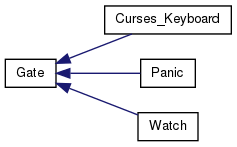
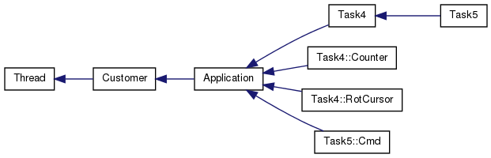

OOStuBS - Technische Informatik II (TI-II)
2.4
Hauptseite
Zusätzliche Informationen
Klassen
Dateien
Auflistung der Klassen
Klassen-Verzeichnis
Klassenhierarchie
Klassen-Elemente
Klassenhierarchie
gehe zur textbasierten Darstellung der Klassenhierarchie


Erzeugt am Mon Mai 20 2013 12:56:29 für OOStuBS - Technische Informatik II (TI-II) von
1.8.1.2
 1.8.1.2
1.8.1.2